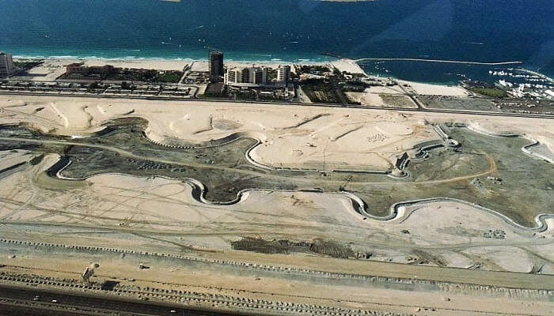
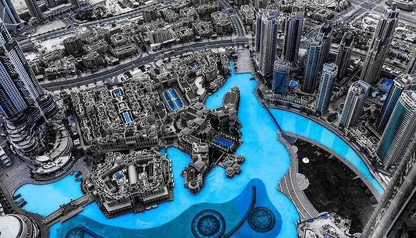
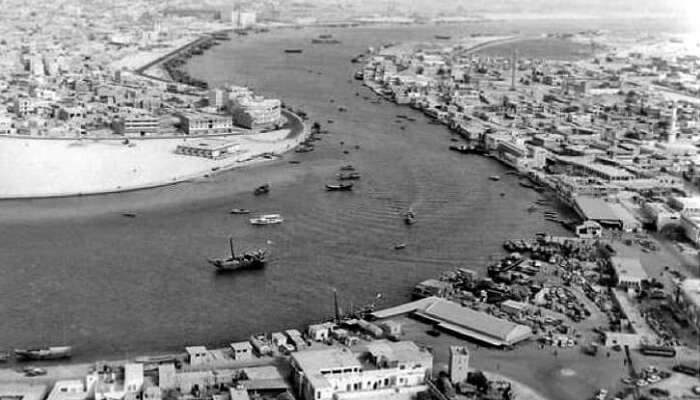
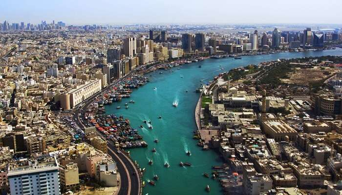

Historical Timeline leading to the rise of Dubai
1830: The small fishing settlement of Dubai is taken over by a segment of the Bani Yas tribe from the Liwa Oasis, led by the Maktoum family who still, interestingly, rule the emirate today.
1892: Foreign traders are drawn into Dubai due to the declaration that they will be exempt from tax, the population doubles and the pearling industry is now booming.
1930-1940: The recession hits Dubai’s pearl industry which falls into decline leading to social pressures and feuds between the royals.
1958: Sheikh Rashid officially becomes the ruler of Dubai after his father’s death.
1959: The Emir of Kuwait lends Sheik Rahid millions of dollars to renovate the Creek so it can accommodate large ships in order to develop Dubai’s reputation as being a major trading hub.
1966: Dubai discovers its own oil, attracting traders to settle in Dubai which in turn enhances economic growth.
1968: Dubai begins exporting crude oil and petro-dollars rush in.
1973: The Dirham becomes the offical unit of currency in Dubai.
1980: Dubai’s annual oil income decreases to US$3.
1985: The Emirates airline is established and Dubai plans its reinvention as a tourist destination.
1990: Sheik Maktoum takes over as the ruler of Dubai, due to his father, Sheik Rashid, passing away during the first Gulf War.
1996: The Dubai shopping festival and the Dubai World Cup are launched and happen to become very popular annual events.
1999: One of the tallest hotels in the world, the Burj Al Arab opens, enhancing Dubai’s reputation further as a tourist destination.
2003: Dubai is recognised by The International Monetary Fund and the World Bank, as a financial hub. Also, at this time the property market in Dubai suddenly grows due to the introduction of freehold properties.
2006: Sheik Mohammed becomes the Prime Minister and Vice President of the UAE, as well as the ruler of Dubai. He updates the Liberal policies of his Maktoum forefathers and develops Dubai further, raising the city’s business profile.
2007: Sheikh Mohammed announces the Dubai Strategic Plan 2015 as well as the inauguration of Dubai Studio City takes place. Dubai World Cup prize money was raised to $10 million and Dubai International City is built.
2008: New Maktoum Bridge opened along with Dubai Sports City and Dubai International Terminal 3. The Atlantis, The Palm hotel & resort is launched.
2009: Dubai Mall, the world's largest shopping mall is inaugurated along and Red Line (Dubai Metro) begins operations. Also Dubai International Cricket Stadium opens.
2010: Burj Khalifa, the world's tallest skyscraper opens and Al Maktoum International Airport starts operating.
2011: Dubai Metro begins operating Green Line as well as Palm Deira station.
2012: Princess Tower and JW Marriott Marquis Dubai are built as Dubai bids for World Expo 2020.
2013: Dubai wins bid for World Expo 2020 and Sheikh Mohammed announces the Dubai Water Canal.
2014: Mall of the World, the world's largest mall and indoor theme park announced and Opera Grand, the first high-rise in the Dubai Opera House District opens.
2015: UAE develops Mars probe named Hope.
2016: Sheikh Mohammed inaugurates the Dubai Water Canal.
2017: Dubai Safari Park is opened to public.
2018: Dubai Frame, World's largest frame opens in 2018.
2019: Construction of Burj Jumeirah commences.
The Evolution Of Dubai
Sheikh Zayed Road In 1990 Vs Now


Dubai Marina In 2000 Vs Now
 
Dubai Creek In 1950 Vs Now
 